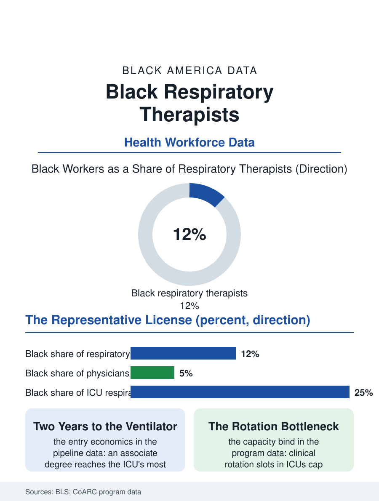

Black Employment
Breathing for Others: Black Respiratory Therapists
An associate-degree license reaches the ICU's ventilators, and respiratory therapy's Black share is among allied health's strongest. The respiratory file.

The respiratory therapist manages the machine that breathes for the patient who cannot, a role the pandemic made briefly famous and permanently essential. The occupation is small, licensed, and shortage-prone, and Black workers hold roughly eleven or twelve of every hundred of its positions in the federal counts, one of the stronger Black shares among the licensed allied health professions. This article reads the respiratory therapy file.
The Associate Degree That Reaches the ICU
The pipeline is the file's first distinction: respiratory therapy remains an associate-degree profession at its entry, the two-year community college program feeding a licensed hospital workforce, and its demographics show what the other health files predict, a substantially more representative workforce than the bachelor's and doctoral professions deliver. The work's center is critical care: ventilator management in the intensive care units, arterial blood gases, the code team's airway, and the neonatal units where the therapist's patients weigh grams. The pandemic wrote the occupation's public chapter, when ventilators became a household word and the therapists who run them became the ICU's visible scarcity, a surge that burned out a measurable share of the workforce and repriced the survivors' labor across the hospital market. Black therapists in the workforce data cluster in the urban hospital systems, the same geography as the patient population in the health files, and the concordance dividend appears here in its most literal form: the therapist explaining the breathing treatment, the sleep study, the home oxygen, in the dialect of the patient's own neighborhood, is practicing the communication the outcomes literature prices. The specialty's internal ladder climbs through neonatal and transport specializations toward the perfusion and pulmonary function niches, with the bachelor's completion programs, increasingly online, mediating the climb.
Smoke, Asthma, and the Community Caseload
The caseload's composition ties the occupation to this atlas's epidemiology. The chronic respiratory diseases, asthma above all in the cities, COPD carrying the smoking file's history, and the sleep apnea of the previous health file, generate the therapist's daily work, and their distribution is the distribution of Black illness in America, so the respiratory department of an urban hospital practices on the front line of the disparity data with a workforce that includes a real share of the community it treats. The profession's public health arm runs the asthma education and smoking cessation programs whose data appear in the health files, and its home care arm manages the oxygen and ventilation patients discharged into the neighborhoods. The occupational hazards are the hospital's own: infectious exposure priced permanently upward by the pandemic's lesson, night shift concentration, since breathing does not keep office hours, and the moral injury of the ICU's end-of-life work, in which the therapist is frequently the clinician who withdraws the support, a role the profession's literature has begun to name and support. Wages have climbed with the shortage into the solid professional range, and the traveling therapist market, the agencies that staff hospitals by the contract, pays the scarcity premium in its purest form to those who can move.
A Small Profession's Leverage
Respiratory therapy's smallness is its strategic feature: a few thousand graduates a year nationally, against hospital demand that cannot substitute any other license for the ventilator. The programs' capacity, clinical rotation slots in the ICUs, is the binding constraint, and the programs located at the urban community colleges, whose classrooms are among the most diverse in health education, are capacity-limited in exactly the places the pipeline is strongest. The profession's associations have read their own data and run the recruitment arithmetic backward from the hospitals' need: the file's programs to watch are the high school health academy pipelines and the employer-sponsored cohorts that pay community college students to commit to the system's ICUs. The respiratory file closes at the ventilator's screen at 3 a.m., green waveforms scrolling, where a therapist whose training cost a community college tuition is performing one of medicine's most literal life-support functions. The occupation proves, inside the hospital's own hierarchy, the thesis the health workforce files keep assembling: shorten and cheapen the credential's road without cheapening the competence, and the workforce that arrives looks like the patients. The ICU has known this for years. The file suggests the rest of the building take the hint.
More in Black Employment
The Black Unemployment Rate: The Two-to-One Pattern
Black unemployment runs at roughly twice the White rate — 5.5 percent against 3.3 percent in annual averages — a ratio stable across five decades of federal data. How it is measured and why it persists.
Black Median Weekly Earnings: The 80-Cent Ratio
Black full-time workers earn a median of about $900 a week — roughly 80 cents for every dollar White workers earn. The BLS earnings data by group, gender, and occupation.
Black Labor Force Participation: Working at National Rates
Black labor force participation runs at roughly the national rate — and Black women participate at higher rates than White women. The BLS participation data.
Source: U.S. Bureau of Labor Statistics, Current Population Survey; Commission on Accreditation for Respiratory Care program data.